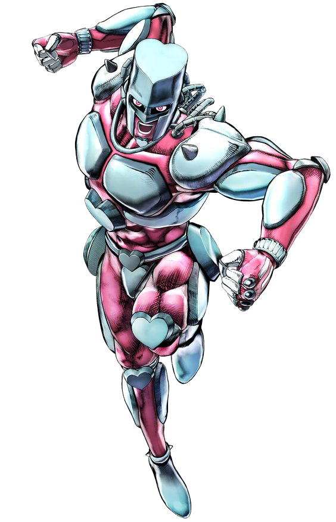
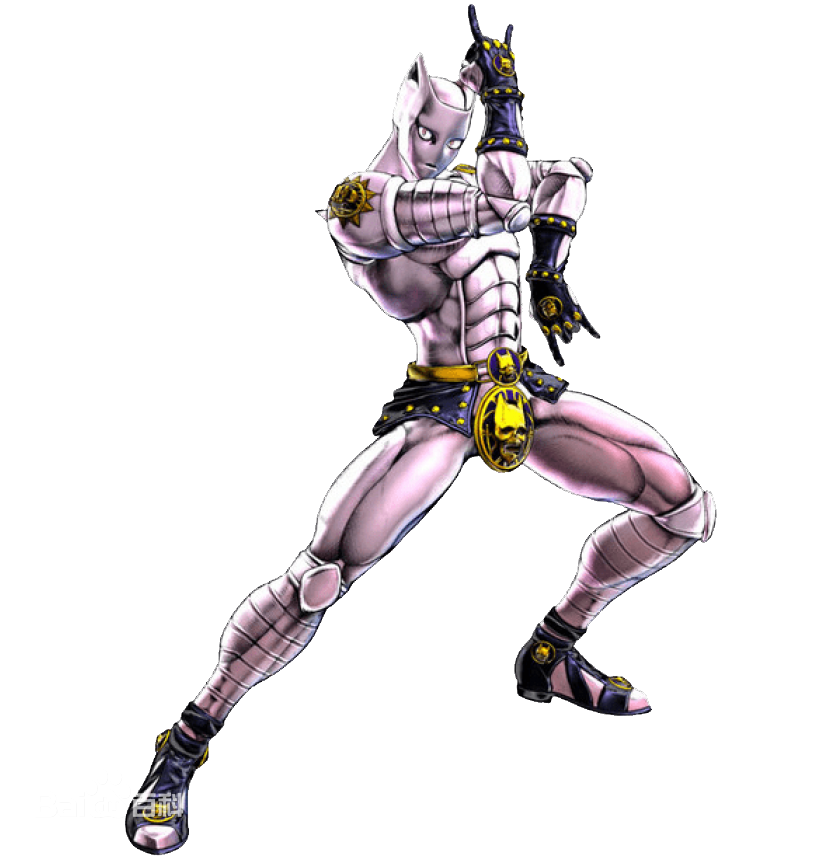

替身系統
替身概要
- 替身是一種由體內生命能源所產生的具有強大力量的影像，由於此影像總是出現在人體身旁。
- 大部分替身使者可以根據自己的意志控制替身的動作，並能自由放出或收回替身。
- 一般人無法看見替身，只有擁有替身能力的人才能看見彼此的替身。
- 只有替身才可以碰觸和攻擊到其他的替身。
- 當替身使者死亡，其替身也會跟著消失。
- 替身使者彼此之間會互相吸引靠近。
- 有些替身會根據替身使者本體的精神成長而產生"進化"。
- 大部分的替身都擁有類似人型的外貌，此外也有其他非人型的類型。
- 替身使者可以是任何生物，並不限於人類。
- 替身能力的獲得，除了天生或是遺傳之外，也能藉由人為賦予或是激發覺醒。
獲得條件
- 受到具有替身能力的直系親屬影響，由於親屬擁有替身能力，而間接激發自己的替身能力。
- 與生俱來有的替身使者天生就擁有替身能力，可能來自遺傳或自我覺醒。
- 被「箭」射穿或損傷
獲得替身最常見的方法，本作品主要的替身都是有心人藉由此方法人為產生。透過「箭」的攻擊，刺激人的求生意志，進而激發人體潛在的替身能力。被箭射中的人，若沒有產生適應性，反而會導致死亡。箭的來源和製作者仍是謎，成分可能是來自外星隕石。
替身能力值
- 破壞力：用來評價替身本身力量或特殊能力的攻擊力與破壞力，表示造成傷害程度的能力值
- 速度：用來評價替身的攻擊速度、反應敏捷度與行動速度的能力值。
- 射程距離：用來評價本體控制替身、替身與本體達到的最長距離，或是替身的攻擊範圍。
- 持續力：用來評價發動替身能力的最長時間，或是維持程度的能力值。
- 精密動作性：用來評價替身能做出細緻動作程度的能力值，具有無差別範圍性攻擊的替身精密動作性評價低。
- 成長性：用來評價替身能力能繼續成長程度的能力值。通常剛獲得或覺醒替身還是本體擁有強烈慾望的替身會有較高的評價。
替身類型
- 近距離力量型：此類型替身的攻擊力量較強，反應速度快，適合正面戰鬥同時能直接保護本體。有些替身的能力影響範圍廣大，可彌補射程短的缺點。
- 遠距離操縱型：此類型替身能以較長的距離操縱，但攻擊力較弱，且不能精密操作，不適合正面對決。替身使者通常隱密行蹤，迴避對本體直接攻擊的危險。
- 遠距離自動操作型：此類型替身可以遠離本體自由行動，本體通常不會遇襲危險，性能會完全不受本體距離影響，即使替身被打倒都不會影響到本體。但替身使者無法根據意志自由控制。